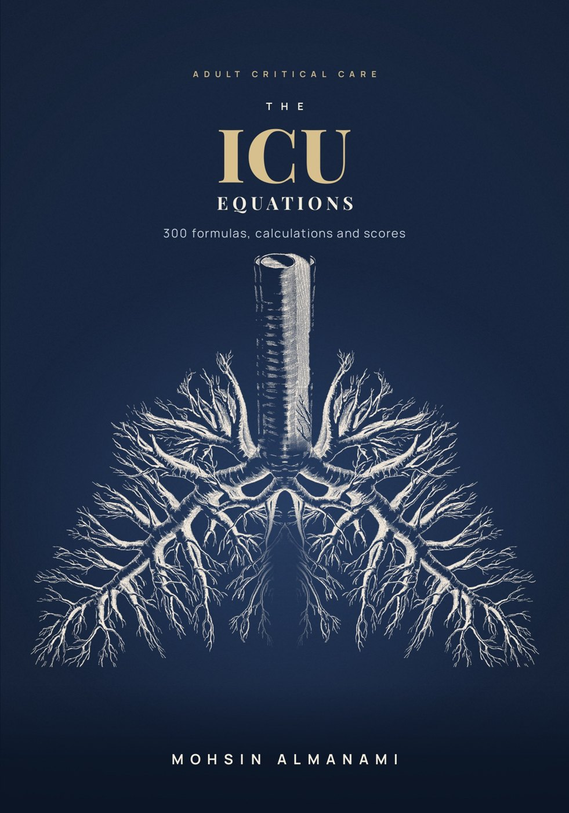
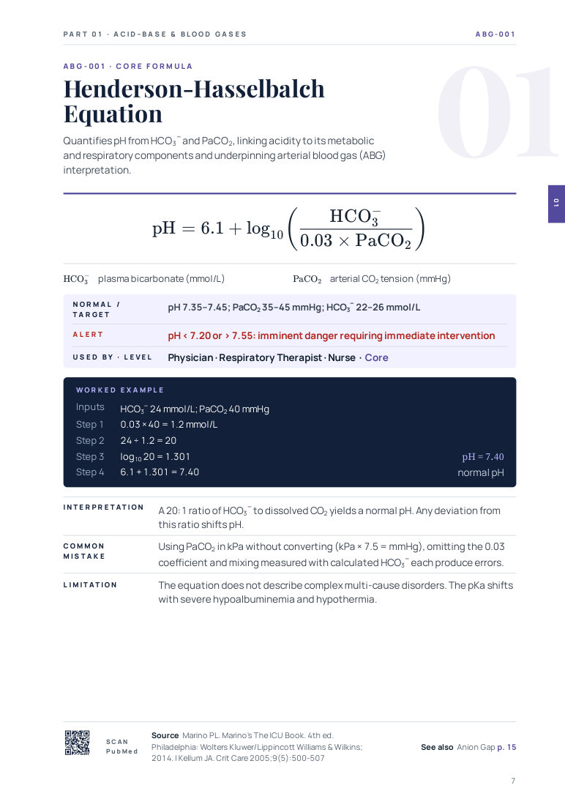
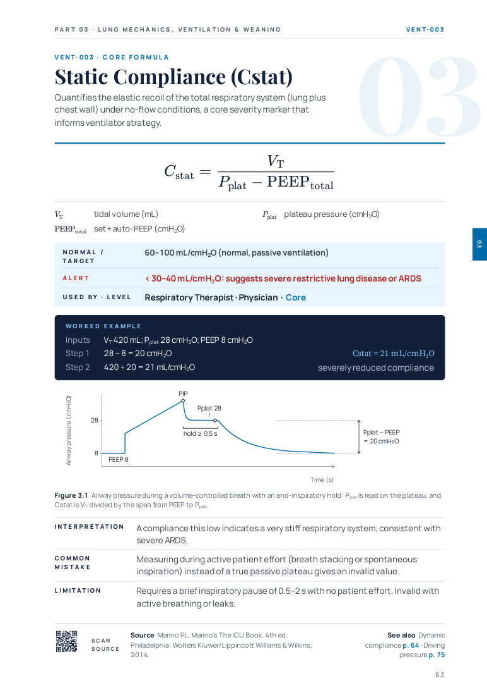
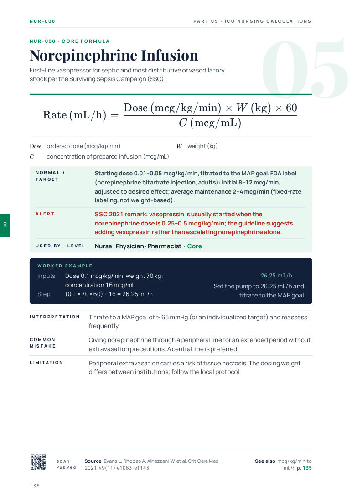

A bedside reference for intensive care teams: physicians, nurses, respiratory therapists, pharmacists, dietitians and physiotherapists.
Number of formulas in each part.
Tap the button below for the cover, contents, how to use the book and sample formula pages.


